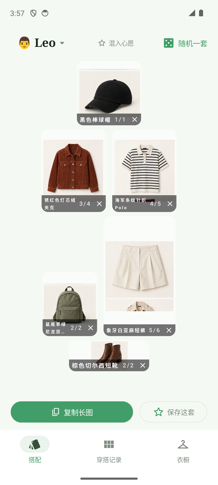
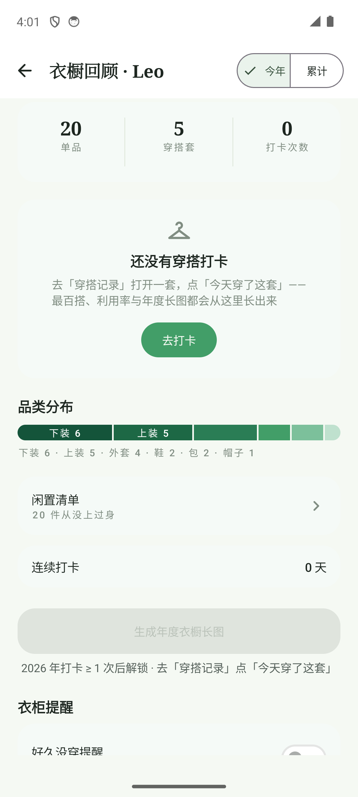
针对 it-033~036 实施后的最新构建（APK 14:59，5 提交 0963e3c/5656189/be076bf/c7269fc/6756a63）重新全页走查：19 个状态重截，dump bounds、像素探测、视觉逐页三通道与基线报告逐条对照。结论，12 项共性问题 10 项完全修复、1 项部分修复（窄格长名）、1 项为刻意保留的素材债务；本轮新增 P0×0 / P1×0 / P2×4（均为基线范围外或提案遗漏项），全程零崩溃零回归。
APK 14:59（无源码比它新）install -r，演示模式 19 个页面/过程态逐一重截（r2-* 系列），含 W6 滚动态、打卡双按钮等过程态
uiautomator bounds（420dp 换算）、关键区域像素探测（状态栏/角标/色阶）、视觉逐页评审，每条结论至少两通道互证
对照 2026-09-24 基线报告 C1–C12 与 7 张线框要点逐条判定 ✅完全修复 / ⚠️部分修复 / 📌刻意保留债务
| # | 问题 | 涉及页面 | 级别 | 修法（对应线框） |
|---|---|---|---|---|
| C1 | 名称/标签截断 | W1/W3 | ⚠️ | 两行+动态字号落地；包格 9 字名仍省略 → it-037 O1（r2-01/03 视觉，0963e3c） |
| C2 | 卡图适配与邻物残片（素材根因） | W1/W3 | 📌 | 刻意零改素材；validate_assets --strict 待 it-032 合入后重出收口（be076bf） |
| C3 | 触控目标 <44dp | W3/W4/W5/W7/W8 | ✅ | 分页/✕ 126×126px=48dp、chips 44–48dp、图标 48dp（dump+装机，0963e3c） |
| C4 | 状态栏三段式色阶接缝 | W4/W5/W7/W9 | ✅ | 四路由 appbar y309→174、状态栏像素白（5656189） |
| C5 | 破坏性操作无警示 | W5/W7/W10 | ✅ | 删除 error 红视觉 (179,38,30)；确认弹窗核实 it-029 既有（5656189） |
| C6 | 禁用/演示态语义不足 | W9 | ✅ | 解锁文案/演示徽标/提醒联动/灰字全部视觉实锤（5656189） |
| C7 | 记录无日期、计数无语义 | W1/W8 | ✅ | 评论 2026/09/24；hero 角标像素 1729、网格 818；n/n a11y（0963e3c） |
| C8 | 导出文案区被裁+标签硬截 | W6 | ✅ | 文案 bounds 完整+标签 ellipsis+输入统一（c7269fc） |
| C9 | 品类分布同色不可对应 | W9 | ✅ | 6 档绿色阶+段内白字直标（5656189） |
| C10 | 无图心愿卡占位空洞 | W10 | ✅ | 品类色块占位（c7269fc） |
| C11 | chips/分段形制不统一 | W3/W8/W10 | ✅ | ScrollFade 渐隐 + SegmentedToggle 共享（c7269fc） |
| C12 | 文案与格式不统一 | W1/W8/W9 | ✅ | 随机一套/YYYY/MM/DD/灰字说明（c7269fc+5656189）；W1 混入灰另列 it-037 |
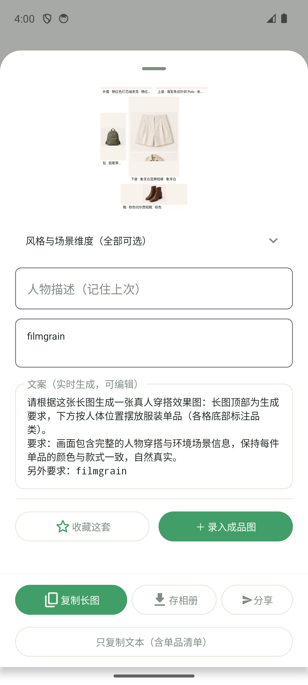
名称条三段式落地：锈红色灯芯绒夹克、海军条纹针织Polo 等长名两行完整显示、一屏网格未破；✕ 与 n/n 角标热区 48dp（dump 126×126px）、a11y 语义就位。残留：包格 9 字名两行仍带省略；「混入心愿」仍为灰色低对比（提案遗漏）。
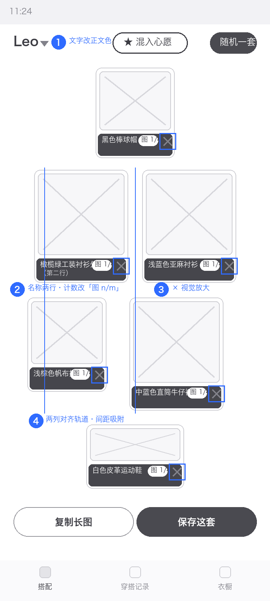
卡标题两行恒行高落地（海军条纹针织 Polo 全显）；行尾白色渐隐让「鞋」chip 不再硬裁；📊🌟⋮ 热区装机实测 48dp。卡图邻物残片为素材债务按预期保留。
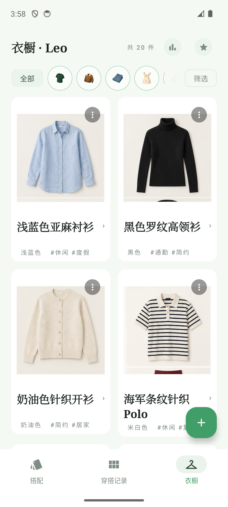
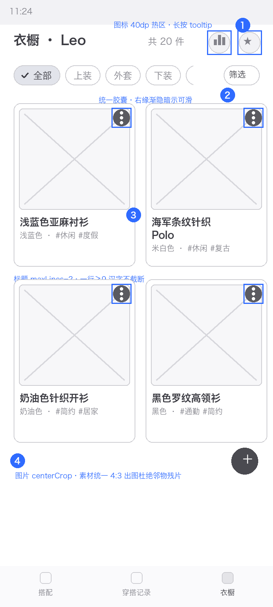
三段式色阶接缝根除：appbar 由 y309 上移到 y174–249、状态栏随白底铺满（W4/W5/W7 像素白，视觉无接缝）；W7 垃圾桶 error 红；评论日期与顶栏统一 2026/09/24；标签 chips 44dp。二次确认核实为 it-029 既有（基线误报）。
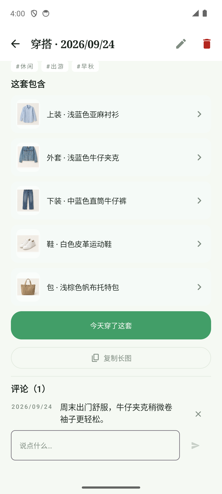
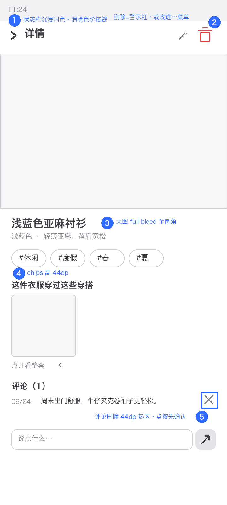
文案区块可滚动至完整可见（bounds 证实整框露出，与动作栏留安全间距）；拼贴标签加 ellipsis+内边距（「帽子·黑色棒球帽·…」）；两输入框统一占位符式。
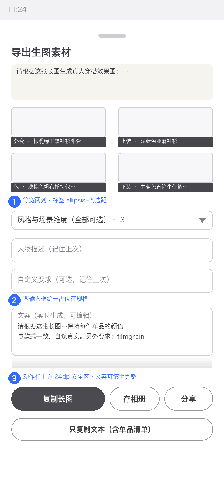
「随机一套」与 W1 统一；hero 日期角标存在（像素深色 1729，网格瓦片区 818）；分页拆 ‹/› 双半热区，dump 节点「上一张」「下一张」均 126×126px=48dp。
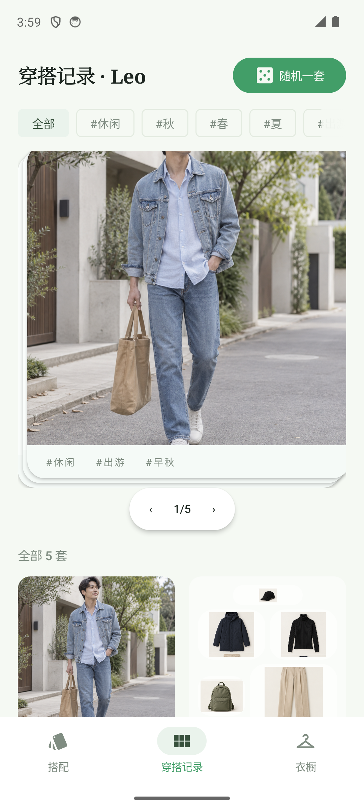
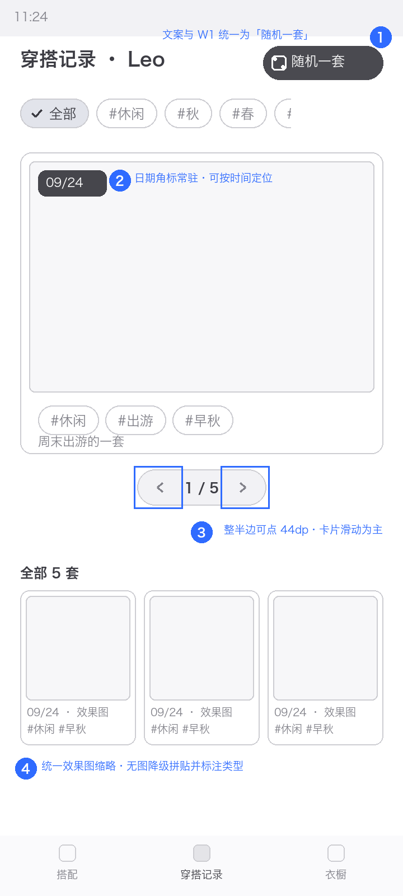
四处状态语义全部落地：比例条 6 档绿色阶+宽段段内白字直标（下装6/上装5）、年度长图解锁说明按 hasWearData 生成、数据行演示态（降透明+徽标+无箭头）、提醒 chips 关联动灰且演示说明改中性灰；页面无接缝。
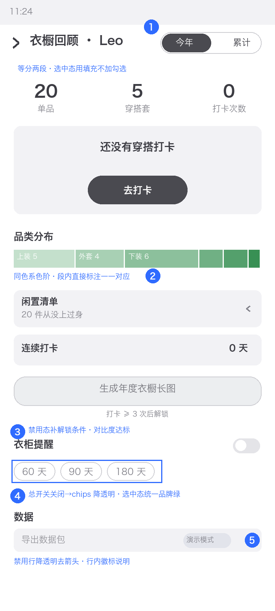
品类色块占位（外套蓝灰、包焦糖）告别空白洞；分段改与 W9 同款连体控件；域名 example.com 下移独立弱化行；chips 行尾渐隐就位。
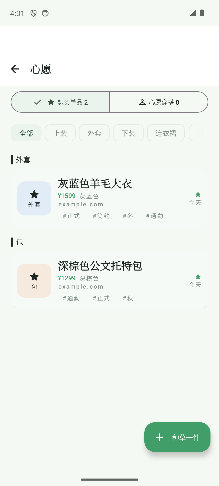
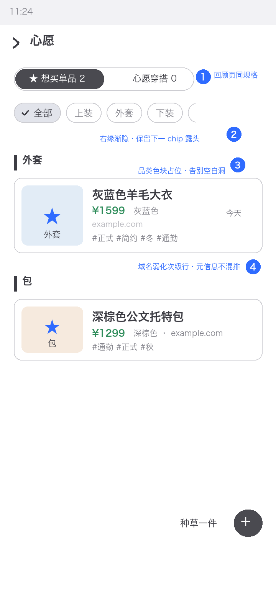
按仓库迭代流程确认后动工；先修共性问题（功能在但用户够不着/猜不到），再修各 App 核心体验。
| 线框 | 内容 | 对应 |
|---|---|---|
| O1 | 包格长名 fitStep/窄格两行策略微调，消除 9 字省略 | C1 ⚠️ |
| O2 | 「混入心愿」pill 改正文色描边（原线框要点①，提案遗漏） | W1 ⚠️ |
| O3 | 角色层 ✓ 改 badge、Mia 行补件数辅助（基线 P2 范围外） | W2 P2 |
| 线框 | 内容 | 对应 |
|---|---|---|
| O1 | 统一 4:3 出图 + 裁剪净化 6 残片；validate_assets.py --strict 全绿收口 | C2 📌 |
| O2 | 效果图主体上下安全边距 ≥5%（effect-commute 脚贴边） | 素材层 |
| 项目 | 结论 |
|---|---|
| 构建与安装 | APK 14:59 构建、find -newer 源码=0；install -r 成功 |
| 重截规模 | 19 个页面/过程态（r2-*），含 W6 滚动态、打卡双按钮、混入提示态 |
| C1–C12 矩阵 | ✅10 / ⚠️1（C1 包格长名）/ 📌1（C2 素材债务）；新增 P0×0 P1×0 P2×4 |
| 分页热区 | dump 节点「上一张」「下一张」=126×126px=48×48dp |
| ✕ 热区 | 「移除该格」126×126px=48×48dp；视觉 16dp |
| 日期统一 | W7 评论 2026/09/24（dump+视觉）；W8 hero 角标像素 1729 / 网格 818 |
| 状态栏 | W4/W5/W7/W9 appbar y174–249（基线 y309+），白底路由像素纯白 |
| 混入提示 | dump「愿望件已附加，滑到候选最后可见」+ 5s 收起（it-036 装机） |
| 打卡闭环 | 单按钮→双按钮→撤销复测通过（r2-15 dump） |
| 数据断言 | 筛选「共 5 件」复测 = JSON Leo TOP 5；角色隔离不变 |
| 回归 | 19 态导航 0 崩溃；实施期 4 轮 testDebugUnitTest 62 项全绿 |
| 误报勘定 | 评论删除确认 it-029 已存在；基线 18dp 系字形子节点 bounds |
现状截图与改版线框见 assets/ 目录；本报告由 report_template.py 生成，可改数据重出。